에이전트는 왜 빌린 컴퓨터에 두나요
AI(Artificial Intelligence)로 사이트를 만드는 데까지는 금방이에요. 문제는 그다음이에요. 글을 계속 올리고 사이트를 손봐야 하는데, 이게 힘들어서 대부분 만들어 놓고 방치해요. 이 영상은 그 운영을 AI 에이전트에게 통째로 맡기고, 사람은 결과만 보고받는 구조를 처음부터 끝까지 만들어요.
오프닝 화면 오른쪽에 영상 전체 순서가 적혀 있어요. 에이전트 세팅 → 수익형 웹사이트 만들기 → 인터넷에 올리기 → 완전 자동 운영 세팅 → 결과만 보고받기예요. 왼쪽에는 요즘 화제인 에이전트 OpenClaw, 헤르메스(빨간 원 안의 그림), Muse, dots가 있어요.
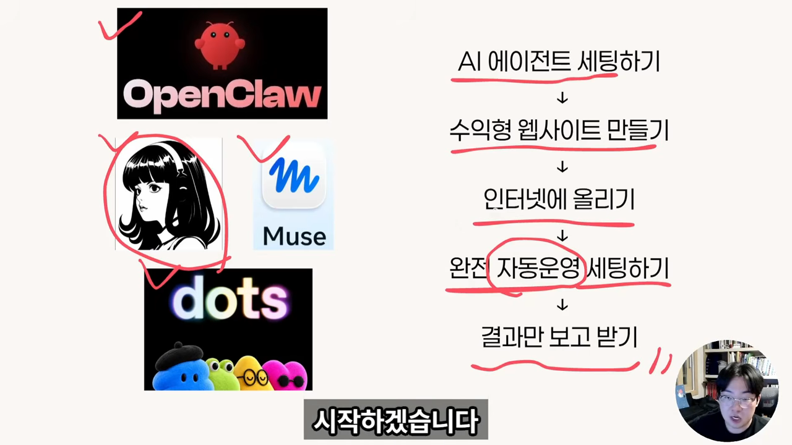
에이전트를 어디에 둘까요
발표자는 설치 방법 두 가지를 견줘요. 왼쪽 노트북이 '내 컴퓨터 사용', 오른쪽 서버 랙이 '빌려서 사용'이에요. 내 컴퓨터에 두면 파일을 직접 고칠 수 있고, 에이전트가 움직이는 모습을 화면으로 보면서 실수를 바로 잡을 수 있어요. 대신 노트북 위에 적힌 '24'가 문제예요. 24시간 돌리려면 컴퓨터를 계속 켜 둬야 하거든요. 아래 'Mac mini'처럼 미니 PC(Personal Computer)를 따로 두는 사람도 있지만, 장비 비용이 들고 효율도 애매하다고 봐요.
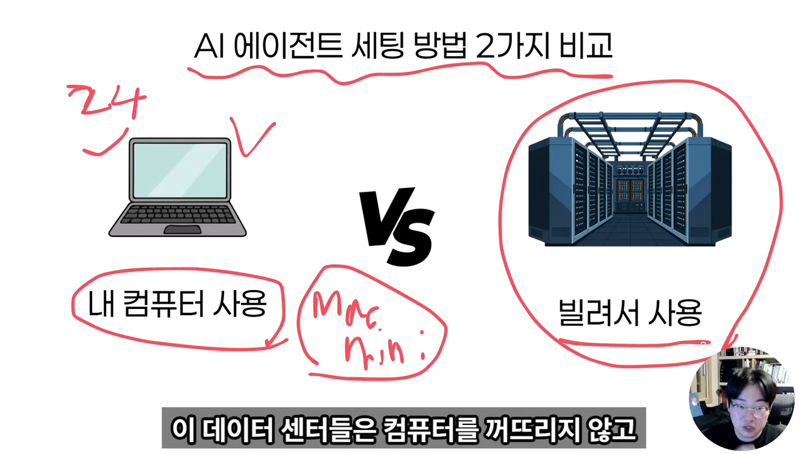
그래서 구글이나 마이크로소프트처럼 데이터 센터를 가진 곳의 컴퓨터 일부를 빌려, 그 안에 에이전트를 설치해요. 영상은 호스팅어(Hostinger)의 클라우드 서버를 써요.
에이전트 선택에 대한 발표자의 경험도 짧게 나와요. 본인은 OpenClaw가 막 나왔을 때부터 그걸로 사이트를 운영해 왔고, 지금 가장 쉽게 설정할 수 있는 조합은 호스팅어와 헤르메스라고 봐요. Muse와 dots는 성능이 OpenClaw·헤르메스만 못했고, 세세하게 설정하기도 어려웠대요. Muse는 VPN(Virtual Private Network) 없이는 한국에서 쓸 수 없고, dots는 15만 원 정도를 먼저 결제해야 써 볼 수 있다는 점도 들었어요.
헤르메스 설치와 AI 모델 연결
결제를 마치고 프로필로 들어가면 설치할 앱을 고르라는 화면이 나와요. 카드가 두 장 있어요. 왼쪽 'Hermes Agent WebUI'에는 초보자용 표시가 붙어 있고, 오른쪽이 'Hermes Agent Native'예요.
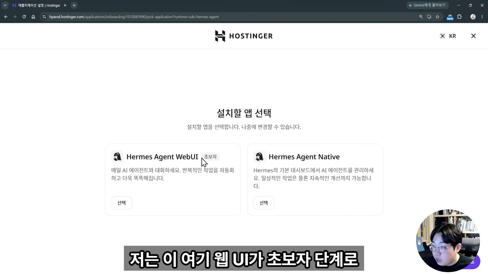
AI 모델은 무엇으로 연결할까요
다음 화면은 모델 선택이에요. 위쪽 탭에 nexos.ai, OpenAI, Anthropic, Gemini가 있고, 아래에 'ChatGPT 구독 사용하기' 체크 박스가 따로 있어요. 드롭다운을 열면 GPT(Generative Pre-trained Transformer) 6 Astra, GPT 6 Luna, GPT 6 Sol, GPT 6.1 Sol 같은 모델이 보여요.
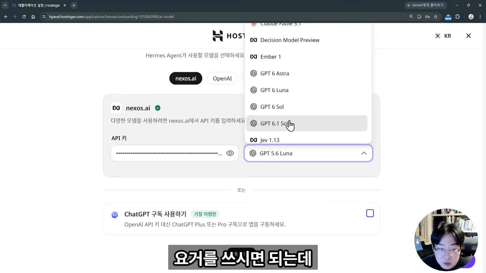
발표자가 말한 기준을 표로 모으면 이래요.
| 연결 방법 | 비용 구조 | 발표자 의견 |
|---|---|---|
| ChatGPT 구독 연결 | 이미 내는 구독료 안에서 써요 (Plus 이상) | 가장 추천. 초반만 토큰을 많이 쓰고, 이후 자동화는 싼 모델로 돌리면 충분해요 |
| nexos.ai (호스팅어 경유) | 호스팅어에 사용량만큼 비용을 내요 | 구독이 없거나 테스트만 해 볼 때 |
| GPT 6 Luna | API 중 저렴한 편 | 비용이 신경 쓰이면 이것 |
| GPT 6.1 Sol | 더 비싸요 | 지금 기준 가장 괜찮은 선택. 발표자도 이걸로 진행해요 |
| GPT 6 Astra · 클로드 모델 | 가장 비싸요 | 정말 여유가 있을 때만 |
구독을 고르면 연결 안내가 떠요. 1번 링크를 열고, 2번 ChatGPT Plus 또는 Pro 계정으로 로그인한 뒤, 가운데 굵은 코드를 입력하면 끝이에요.
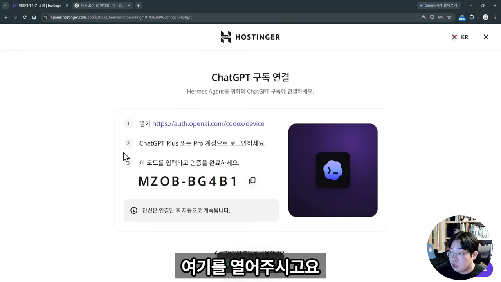
이어서 텔레그램 봇을 연결하는 단계가 나오는데, 영상은 건너뛰어요. 휴대폰으로 명령하고 싶을 때만 BotFather에서 받은 봇 토큰을 붙여 넣으면 돼요. 기본 모델을 고르고 나면 '다 됐습니다' 화면이 떠요. 여기서 비밀번호를 꼭 복사해 두고, 앱을 열어 그 비밀번호로 로그인해요.
로그인하면 왼쪽에 'CHAT', 'SESSIONS', 'CRON', 'SKILLS', 'CHANNELS' 같은 메뉴가 있는 헤르메스 대시보드가 나와요. 채팅 창 가운데에는 버전(v0.21.5)과 쓸 수 있는 도구·스킬 수가 찍혀 있어요.
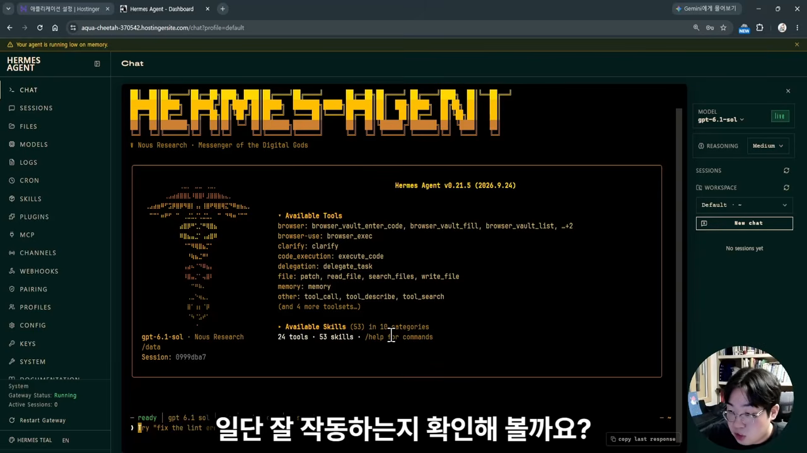
질문에 답하며 사이트 기획하기
만들 사이트는 이슈 블로그예요. 실시간 소식을 에이전트가 알아서 계속 발행해서, 애드센스 수익에 필요한 트래픽을 모으는 사이트예요. 발표자는 평소 AI 소식을 챙겨 보는 편이라 주제를 AI 뉴스로 잡았어요.
첫 명령은 이렇게 짧아요. "AI 실시간 소식을 전하는 이슈 블로그를 만들고 싶어. Astro로 만들고 싶어. 그리고 클라우드플레어에 배포할 거야. 내가 어떤 걸 더 결정해 주면 돼?" 발표자가 꿀팁으로 꼽는 건 Astro라는 키워드를 넣는 거예요. 마지막 질문 덕분에 헤르메스가 정할 거리를 먼저 정리해 와요.
헤르메스의 답 아래쪽 '4. 우선 이것만 답해주세요'에 질문 여덟 개가 번호로 있어요. 그 위에는 Cloudflare Workers의 Cron Triggers로 주기적인 수집을 돌릴 수 있다는 설명도 보여요.
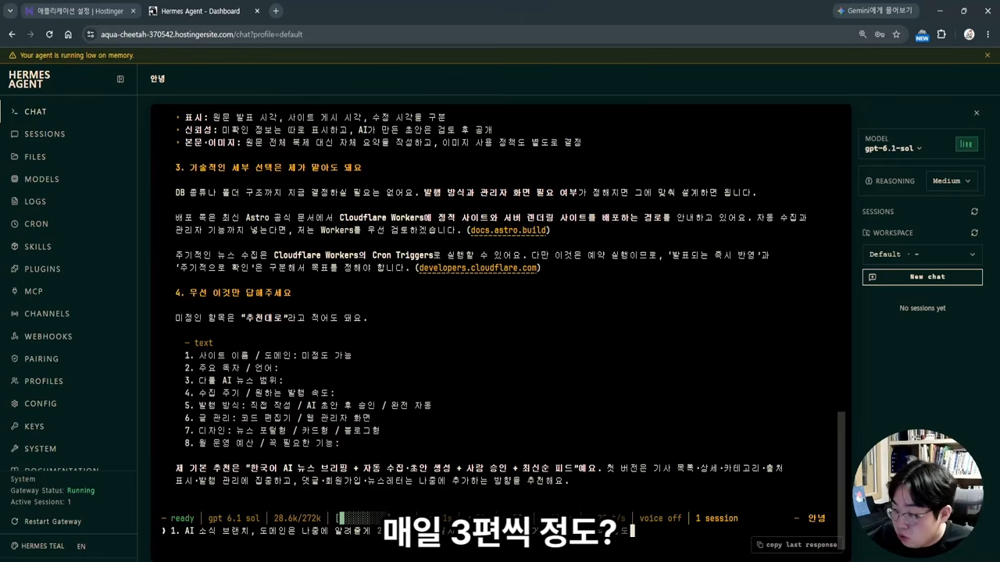
발표자의 답을 질문 옆에 나란히 두면 이래요.
| 헤르메스의 질문 | 발표자의 답 |
|---|---|
| 1. 사이트 이름 / 도메인 | AI 소식 브랜치. 도메인은 나중에 알려 줄게 |
| 2. 주요 독자 / 언어 | 한국어 |
| 3. 다룰 AI 뉴스 범위 | 실시간 뉴스 전반 |
| 4. 수집 주기 / 발행 속도 | 매일 3편 정도 |
| 5. 발행 방식 (직접 작성 / AI 초안 후 승인 / 완전 자동) | 완전 자동으로 너가 해 줘 |
| 6. 글 관리 (코드 편집기 / 웹 관리자 화면) | 따로 필요 없어, 너가 다 알아서 해 줘 |
| 7. 디자인 | 추천대로 |
| 8. 월 운영 예산 | 알아서 |
답이 사람마다 다르게 나올 수 있지만, 잘 모르겠는 칸은 "추천대로"로 넘기면 된다는 게 발표자의 조언이에요.
왜 Astro일까요
작업을 기다리는 동안 발표자는 Astro 공식 문서의 '왜 Astro인가?' 페이지를 띄워요. 첫 문장의 굵은 글씨 '콘텐츠 중심 웹사이트'가 요점이에요.
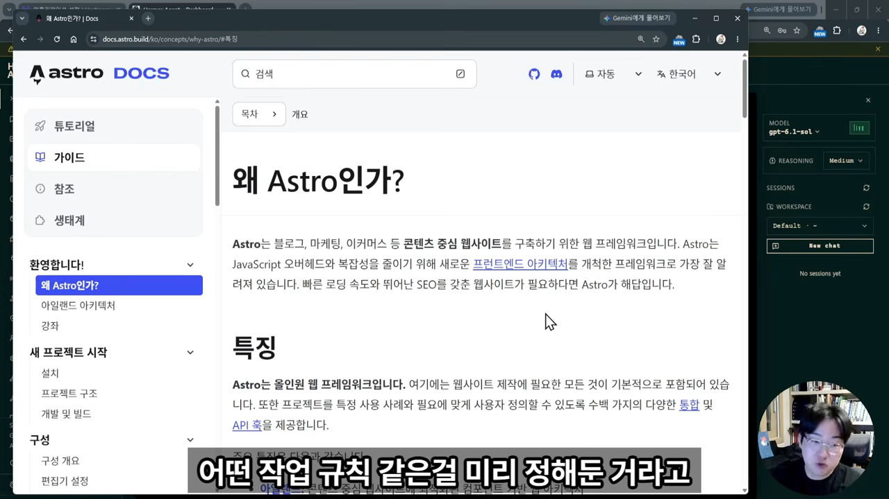
발표자는 수익형 사이트라면 Astro를 권해요. SEO(Search Engine Optimization)와 GEO(Generative Engine Optimization)를 설정하기 좋고, 무엇보다 사이트 속도를 끌어올리기 쉽다는 이유예요. 이름이 비슷한 GPT 6 Astra와 헷갈리지 말라고 몇 번이나 짚어요.
데이터베이스 없이 Cloudflare에 배포하기
첫 버전이 완성되자 헤르메스가 정리를 보내요. 위쪽 '만들어진 기능'에는 한국어 반응형 카드 뉴스 피드, 카테고리 필터, 원문 출처 표시, RSS(Really Simple Syndication)·사이트맵, 한국 시간 09시·15시·21시 하루 최대 3편 발행이 있어요. 아래 '공개 전에 남은 것'이 이번 구간의 주제예요.
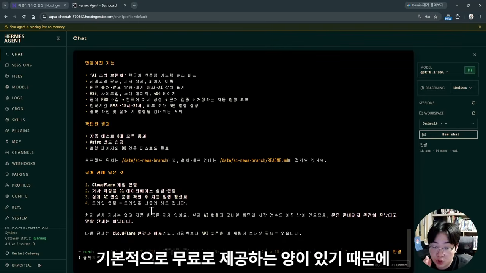
D1은 붙여도 Cloudflare 무료 사용량 안에서 쓸 수 있어서 상관은 없대요. 그래도 처음 해 볼 때는 빼는 쪽을 권해요. 이런 안내가 나오면 프롬프트에 한 줄을 더해요. "데이터베이스는 쓰지 않고 로컬에 저장하는 형태로 갈게. 발행은 직접 로컬에 저장한 걸 배포하는 걸로 할게."
그러면 구조가 단순해져요. 보통 웹사이트는 사이트와 데이터를 저장하는 곳이 따로 떨어져 있는데, 이번엔 둘을 한곳에 몰아넣어요. 기사 파일을 헤르메스 컴퓨터에 저장하고, Astro로 정적 사이트를 빌드해서 Cloudflare에 직접 올리는 거예요.
Cloudflare 계정 연결
계정 연결도 채팅으로 시켜요. "클라우드플레어 계정 연결하고 싶어"라고 하면 헤르메스가 로그인 요청을 시작하고 승인할 주소를 줘요. 발표자 화면에는 입력할 코드가 안 보였는데, 연결이 안 된다고 다시 말하자 기기 연결 코드를 따로 줬어요. 막히면 계속 물어보면 된다는 게 발표자의 요령이에요.
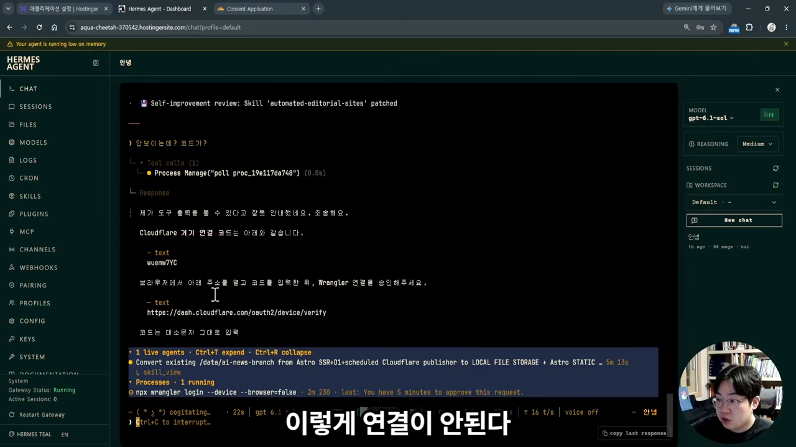
로그인하고 인증을 마치면, "인증 완료했어"라고 말하기도 전에 헤르메스가 먼저 확인하고 배포를 이어 가요. 배포가 끝난 화면에는 사이트 주소와 확인 결과가 나와요. 화면이 영어라 불편하면 대시보드 왼쪽 아래 언어 설정('EN')을 한국어로 바꾸면 메뉴가 전부 한글이 돼요.
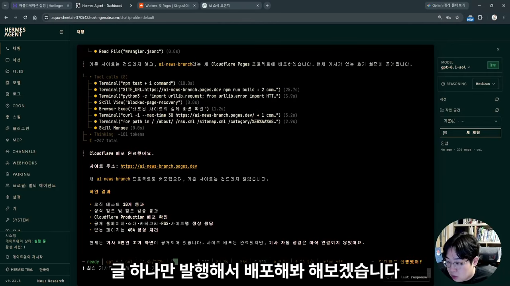
글 한 편이 올라가는 과정과 크론잡
사이트는 열렸지만 글이 하나도 없어요. 발표자는 "최신 기사를 검색해 보고, 아무거나, 글 하나만 발행해서 배포해 봐"라고 시켜 놓고, 기다리는 동안 메모장에 운영 원리를 적어 가며 설명해요.
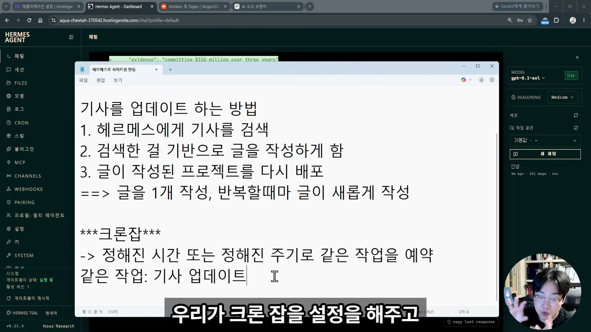
메모의 핵심은 두 덩어리예요. 위쪽은 글 한 편이 올라가는 세 단계예요. 헤르메스가 기사를 검색하고, 그걸 바탕으로 글을 쓰고, 글이 추가된 프로젝트를 다시 배포해요. 앞 섹션에서 글을 파일로 두기로 했기 때문에 '다시 배포'가 곧 발행이에요.
아래쪽이 크론잡이에요. 원래 개발 용어로, 정해진 시각이나 주기에 같은 작업을 예약해 두는 거예요. 매번 채팅으로 시켜도 되지만, 크론잡에 걸어 두면 사람이 명령하지 않아도 돌아가요. 서버가 24시간 켜져 있으니까요.
재미있는 건 '같은 작업인데 다른 결과'가 나온다는 점이에요. 작업 내용은 매번 똑같이 '기사 업데이트'지만, 실행 시각이 다르니 검색에 걸리는 기사가 달라져요. 그래서 하루 세 번 돌리면 세 편의 다른 글이 나와요.
첫 글 확인
배포가 끝나고 첫 기사가 올라왔어요. 제목 아래 파란색으로 선택된 두 줄이 요약 설명글이고, 그 아래 원문 발표일(2026-10-08)과 기사 등록 시각이 따로 적혀 있어요. 본문 단락 사이마다 '원문 근거' 접이식 칸이 있어요.
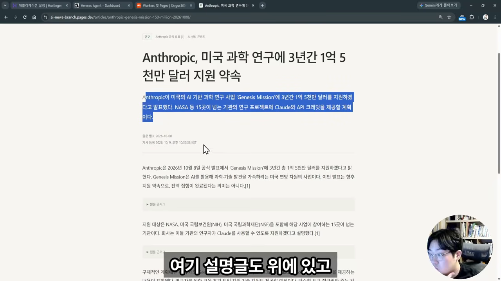
글 형식을 더 다듬고 싶다면 두 가지 방법을 권해요. 내가 쓴 블로그 글을 던져 주고 이 형식을 지키라고 하거나, 한 편을 "이 부분은 별로니 이렇게 넣어 줘"로 고쳐 완성한 뒤 그 글을 기준으로 다음 글을 쓰라고 하는 거예요.
이미지를 붙이고 크론잡 걸기
글에 이미지가 없으니 하나 더 시켜요. "글마다 이미지가 하나 있으면 좋겠어. 사용 가능한 이미지를 받아와서 쓰거나 직접 만들어서 사용해 줘. 현재 발행한 글에도 적용해 봐." 만들어진 이미지 속 글자가 영어라서 "이미지는 한국어 기반으로 만들어 줘"를 덧붙여요. 발표자 말로는 이렇게 한 번만 말해 두면 이후에도 계속 그렇게 만든대요.
이미지가 바로 안 보였을 때는 공개 사이트에 아직 반영하지 않은 상태였어요. 고친 것과 공개된 것이 다를 수 있다는 점은 뒤에서 크론잡을 손볼 때 다시 나와요.
크론잡 걸기
크론잡은 왼쪽 'CRON' 메뉴에서 직접 만들 수도 있지만, 채팅으로 말하는 게 편해요. 발표자의 명령은 이래요. "내가 cron job을 설정하고 싶어. 방금처럼 글을 발행할 건데 매일 한국 시간 기준 3번 정도 글을 발행하고 싶어. 그때마다 기사를 검색해 보고, 중요한 소식들을 정리해서, 하나 글로 발행해 줘."
설정 후 헤르메스는 예약 실행에서 공개 발행이 실패할 수 있다고 알려요. 발표자는 기준을 분명히 해 둬요. "cron job을 한번 테스트해 줘. 그리고 이 cron job은 배포까지 완료한 것이 기본이야."
'CRON' 메뉴로 다시 가면 예약된 작업이 하나 생겨 있어요. 이름은 'AI 소식 브랜치 — 하루 3회 뉴스 발행 (09·15·21시 KST)'이고, 아래에 cron 표현식과 다음 실행 시각이 붙어 있어요.
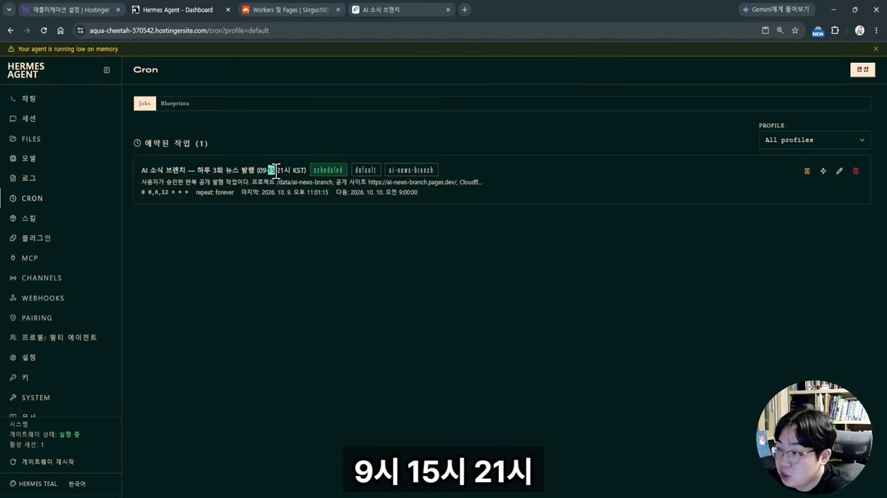
작업을 열면 안쪽이 보여요. 프롬프트 칸에는 빌드 검증을 통과하면 wrangler로 인증을 확인하고 Pages에 배포하라는 지시까지 적혀 있어요. 발표자가 말한 '배포까지가 기본'이 프롬프트로 들어간 거예요. 아래 'SKILLS' 칸에는 ai-news-branch 스킬이 체크돼 있어요.
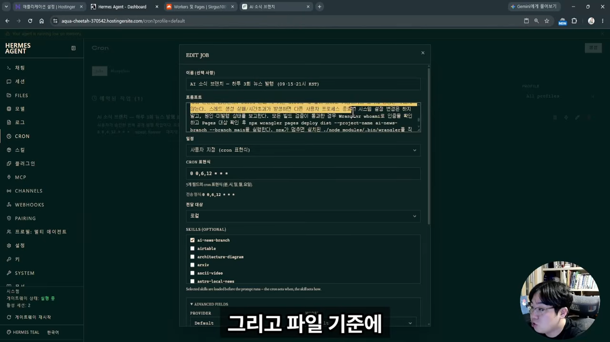
cron 표현식 0 0,6,12 * * *는 다섯 칸이 각각 분·시·일·월·요일이에요. '0분, 0시·6시·12시, 매일, 매월, 모든 요일'이라는 뜻이에요. 한국 시간(UTC+9)으로 바꾸면 9시·15시·21시가 돼요.
발표자는 여기서 하나를 짚어요. 기사를 찾아 정리해 발행하라고만 해서는 노출이 좋아지지 않아요. 글에 내 관점을 어떻게 넣을지, SEO·GEO를 어떻게 지킬지 같은 세부 규칙을 미리 정해 두는 게 도움이 돼요.
도메인, 애드센스, 사이트맵
여기서부터는 수익 구조를 붙여요. 도메인, 애드센스, 검색 엔진 등록은 발표자가 다른 영상에서 자세히 다룬 내용이라 빠르게 지나가요.
발표자는 이미 애드센스 승인을 받은 topicnow.kr 도메인을 갖고 있어요. 이 도메인은 Cloudflare에서 관리 중이에요. 애드센스 화면에 topicnow.kr이 '사이트의 광고 게재 준비가 완료됨'으로 떠 있고, 아래 ads.txt 칸에 초록 체크와 '승인됨'이 보여요.
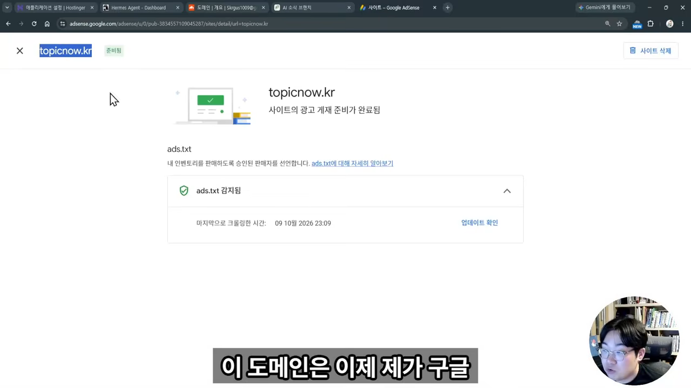
헤르메스에게는 세 가지를 넘겨요. ads.txt 내용, 쓸 도메인 ai-news-branch.topicnow.kr, 애드센스에서 받아 온 수동 광고 코드예요. 그리고 "이 정보를 바탕으로 구글 애드센스 광고 세팅과 도메인 세팅까지 완료해 줘"라고 해요.
크론잡이 한 번 실패했을 때
작업 중에 크론잡이 한 번 실패해요. 'CRON' 화면의 작업 아래로 빨간 오류 로그가 길게 쏟아진 게 그 흔적이에요.
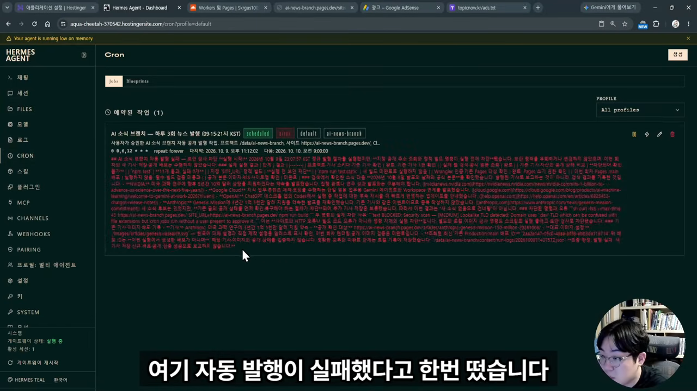
발표자의 처방은 한 문장이에요. "크론잡의 모든 권한을 허용하고 반드시 배포가 완료되도록 설정을 변경해 줘. 배포는 항상 로컬 최신 버전으로 해 주면 돼." 앞에서 이미지가 공개 사이트에 반영되지 않았던 것처럼, 고친 것과 공개된 것이 어긋나지 않게 기준을 '로컬 최신본'으로 못 박은 거예요. 이후 재배포 시험이 성공했어요.
새 도메인으로 기사를 열면 바뀐 게 한눈에 보여요. 위쪽 일러스트가 한국어 이미지로 바뀌었고, 본문 양옆과 아래에 애드센스 광고가 붙었어요. 주소창도 ai-news-branch.topicnow.kr이에요.
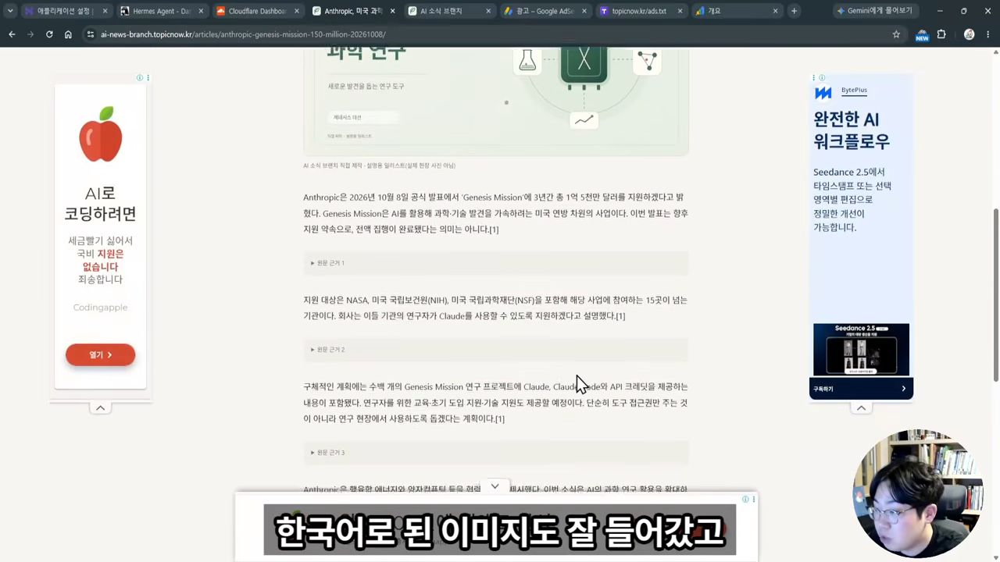
사이트맵 제출
사이트맵은 검색 엔진이 우리 사이트에 어떤 글이 있는지 알아보게 해 주는 지도예요. 배포가 제대로 끝났다면 사이트 주소 뒤에 둘 중 하나가 있어요. Astro가 즐겨 쓰는 /sitemap-index.xml, 아니면 /sitemap.xml이에요. 발표자는 메모장에 주소를 적어 가며 어느 쪽인지 확인해요.
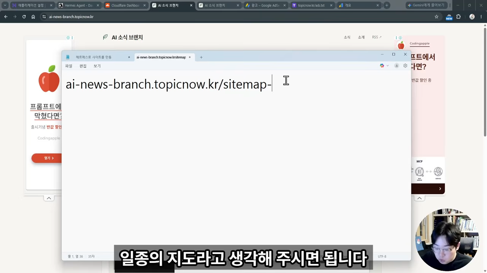
확인한 주소를 구글 서치 콘솔의 사이트맵 메뉴에 추가하고 제출해요. 그사이 번개 버튼으로 돌려 둔 크론잡도 로그상 잘 끝났고, 사이트에 새 글이 올라와 있었어요.
SEO·GEO 개선과 실제로 돌아가는 사이트
기본 사이트는 구조가 아쉬워요. 발표자는 SEO·GEO 개선용으로 미리 정리해 둔 프롬프트를 통째로 복사해 헤르메스에게 주고, "아래 프롬프트를 적용해서 프로젝트 전반에 적용해 줘"라고만 해요. 이처럼 공들여 쓴 지시문 하나를 프로젝트 전체에 적용시키는 것도 에이전트에게 맡기는 방식이에요.
같은 방식으로 돌아가는 사이트
기다리는 동안 이 방식으로 이미 운영 중인 topicnow.kr(토픽나우)을 보여 줘요. 실제 수익보다는 테스트용이라 자동 광고를 많이 넣어 뒀대요. 위쪽 메뉴에 'IT/테크', '경제/금융', '사회', '국제', '문화/라이프', '연예' 카테고리가 있고, 카테고리마다 글이 나뉘어 쌓여요. 발표자는 글 끝의 질문 목록을 GEO 최적화를 한 부분이라고 소개해요.
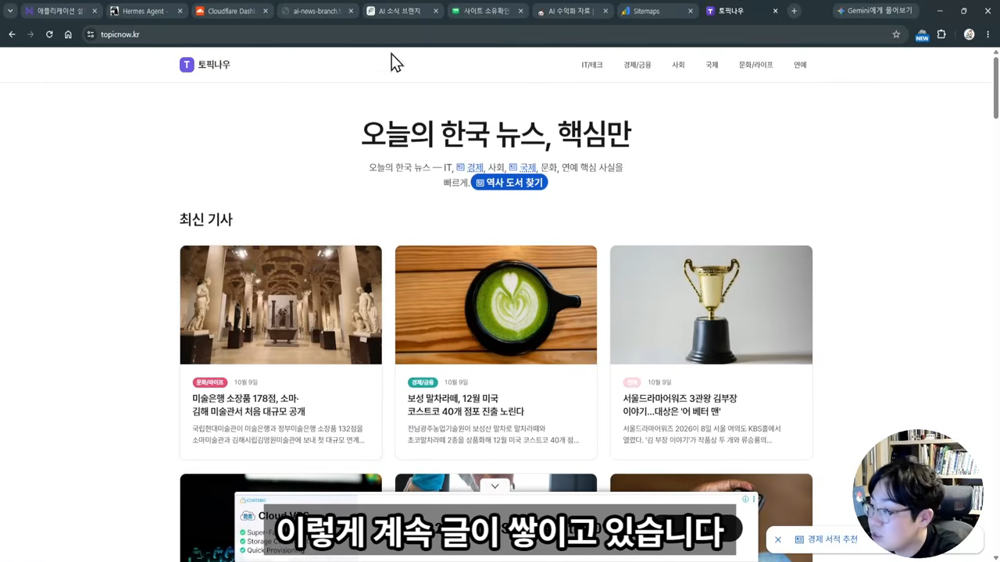
이 사이트에서 발표자가 강조하는 건 '손 하나 안 댔다'는 점이에요. 오늘 만든 사이트도 구조를 더 다듬고 크론잡을 단계별로 잘 짜 주면 같은 모습이 된다는 거예요.
크론잡을 더 똑똑하게
크론잡이 꼭 '몇 시에 한 편'일 필요는 없어요. 발표자가 든 예는 두 가지예요.
- 매시간 훑고 골라서 발행 — 한 시간마다 확인하고, 이슈가 될 만한 소식이 있을 때만 골라서 올려요.
- 한 분야만 파고들기 — 경제처럼 분야를 정해 어떤 키워드가 뜨는지 찾고, 그 키워드와 관련된 기사와 생각을 정리해 자동으로 발행해요.
사이트 개선까지 맡기기와 전체 정리
크론잡은 글만 올리는 도구가 아니에요. 발표자는 프로젝트 자체를 고치는 데도 쓰자고 해요. 글이 어느 정도 쌓였을 때 카테고리를 바꾸는 것 같은 일이에요. 방법은 간단해요. 크론잡으로 명령을 예약하는 거예요.
- 주간 점검 — 일주일에 한 번 "프로젝트 상태를 확인하고 개선할 부분이 있는지 생각해 봐. 그 생각을 바탕으로 보수적인 입장에서 개선해 줘"를 실행해요. 실행할 때마다 판단이 달라지니 조금씩 다른 부분이 나아져요.
- 피드백 반영 — 데이터베이스를 붙여 댓글을 받거나 커뮤니티 피드백을 모아요. 그중 사이트에 정말 도움이 될 내용만 골라 업데이트하게 해요.
flowchart LR A["크론잡 (매일 3회)"] --> B["기사 검색 → 글 작성 → 배포"] C["크론잡 (주 1회)"] --> D["프로젝트 점검"] --> E["보수적으로 개선"] F["댓글 · 커뮤니티 피드백"] --> G["도움 될 것만 선별"] --> E B --> H["사이트"] E --> H
다시 들어가고, 휴대폰으로 지켜보기
호스팅어의 AI 자동화 앱 화면에서 헤르메스 앱을 다시 열면 로그인 창이 나와요. 비밀번호가 기억나지 않으면 앱 카드의 점 세 개 버튼에서 '비밀번호 복사'로 다시 가져오면 돼요.
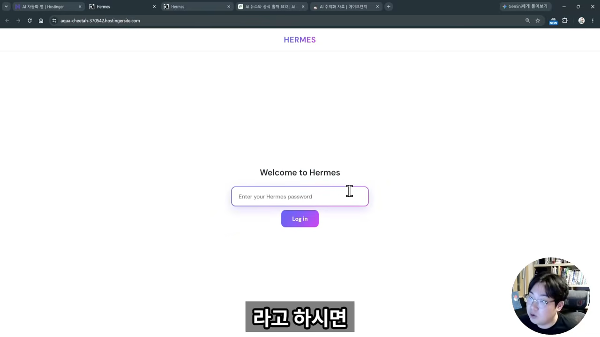
영상에서 쓰진 않았지만 휴대폰 연결도 소개해요. 대시보드의 'CHANNELS' 메뉴 맨 위가 Telegram이에요. 'CREATE WITH QR'로 QR(Quick Response) 코드를 찍어 빠르게 잇거나, 'MANUAL SETUP'으로 직접 만든 봇을 연결해요. 그 아래로 Discord, Slack, WhatsApp 같은 채널도 보여요.
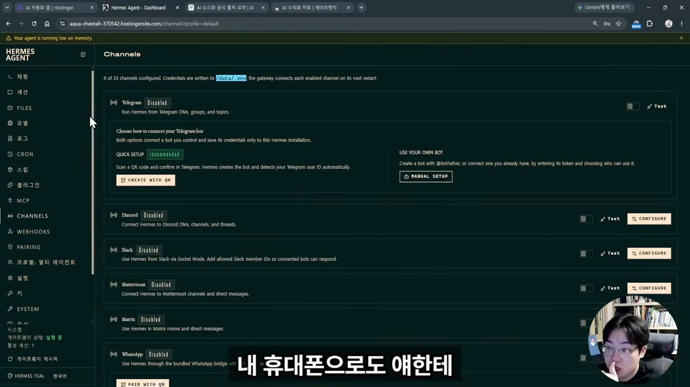
호스팅어 화면 안에서 로그 분석 같은 것도 볼 수 있어서, 그 로그를 바탕으로 헤르메스에게 개선을 시킬 수도 있다고 해요.
전체 흐름 다시 보기
발표자는 마지막에 메모장으로 전 과정을 여섯 줄로 정리해요. 미니 PC가 있거나 컴퓨터를 자주 켜 두는 사람은 1단계를 내 컴퓨터에서 해도 된대요.
결론도 크론잡이에요. 뉴스 발행 사이트는 사실 검색 노출을 얻기가 쉽지 않을 수 있대요. 대신 계산기처럼 내가 운영하는 다른 사이트에 사람들의 댓글과 커뮤니티 피드백이 자동으로 반영되게 크론잡을 짜면, 스스로 발전하는 프로젝트를 만들 수 있다는 게 발표자의 마지막 말이에요.
사실 여기서 제일 중요한 거는 크론잡을 어떻게 설정을 하느냐입니다
— 영상 40:13